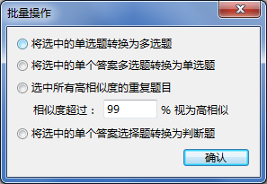
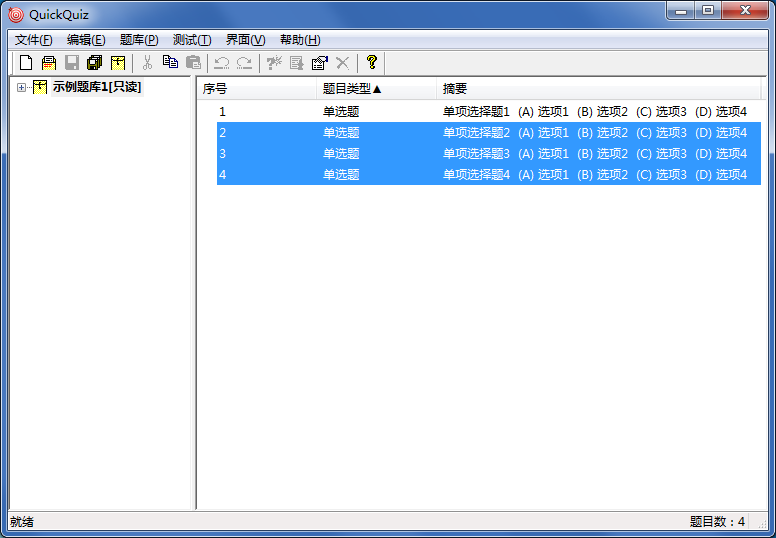

批量操作
批量操作
批量操作界面如下：

检测选中题目中的单选题，并将其转换为单个选项的多选题；若选中的题目中包含非单选题，跳过这些题目。
检测选中题目中单个答案的多选题，并将其转换为单选题；若选中的题目中包含非多选题或答案超过一个的多选题，跳过这些题目。
首先自动按照类型顺序对主界面右侧窗格中的所有题目进行排序，然后进行检测，若有多个题目相似度大于设定值（可设定为80%~100%），则选中相似题目中除排在最前的题目之外的所有相似题目。
例如，选中下图题库中相似度超过80%的重复题目，结果如下，即认为4道单选题相似度较高，为重复题目，并选中了后3道。

又例：选中上图题库中相似度超过99%的重复题目，结果未选中任何一道题目，即认为均不相似。
本功能可用于剔除题库中的重复题目。
 | 相似度仅供参考，若利用此方法剔除重复题目，剔除前一定要重复确认，以免误删。 |
|---|
重复题目的定义如下：
- 单项选择题/多项选择题：题干、各选项内容相似度不小于设定值，选项数量和答案完全相同；
- 判断题：题干相似度不小于设定值，答案完全相同；
- 填空题：题干、各答案的相似度不小于设定值，空白数量完全相同；
- 简答题：题干、答案的相似度不小于设定值。
| 对于选择题而言，若进行比较的两道题目答案不同，则不认为是重复题目；若选项内容相似，但选项顺序不同，也不认为是重复题目；
题目解析不参与相似度检查。 |
|---|
检测选中题目中的单选题和单个答案的多选题，并将其转换为判断题。有如下规则：
- 选项中必须包含明确说明对错的内容（包括但不限于“正确”“对”“TRUE”“√”“错误”“WRONG”“×”等文字），才会被转换，否则跳过；
- 若选中的题目中包含非选择题或答案超过一个的多选题，跳过这些题目。
GX Software 2020-2021
V2.0